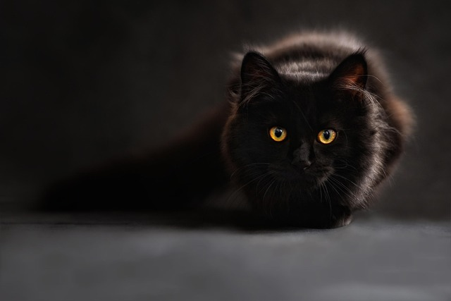

Poem
Here is a cool cat poem worth sharing with your feline friends.
🐾 **The Cat in the Hat (Not That One!)** 😸
There once was a cat with a very big hat,
He sat on the couch and squashed it flat!
He stretched with a yawn, then blinked one eye,
And watched a bird as it flew by.
He chased his tail in dizzy spins,
Then pounced on socks and clothespins.
He leapt up high, then flopped down low,
Then vanished quick—where did he go?
Behind the curtain! Under the bed!
With just two glowing eyes instead!
He popped back out with a mighty meow,
Demanding food, "I’m hungry now!"
He purred and purred with all his might,
Curled in a ball and slept all night.
So if you see a hat too wide,
A cat might just be curled inside!